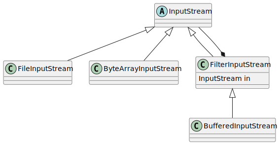

I/O
1. Blocking IO - java.io

| I/O must be properly buffered for files and sockets, and also for internal operations like compression and string encoding |

java.io.tmpdir
java -Djava.io.tmpdir=/home/pohvii/Temp
System.out.println(System.getProperty("java.io.tmpdir"));
2. Non-Blocking IO - java.nio
- Channel
-
A channel represents an open connection to an entity such as a hardware device, a file, a network socket, or a program component that is capable of performing one or more distinct I/O operations, for example reading or writing.
-
SocketChannel
-
ServerSocketChannel
-
FileChannel
-
- Buffer
-
A container for data of a specific primitive type.
-
ByteBuffer
-
- Selector
-
Selector is a class which implements readiness notification. Based on system call
selectorepoll-
read readiness
-
write readiness
-
accept readiness
-

Path p = Paths.get("")
Files FileSystems